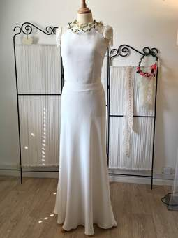
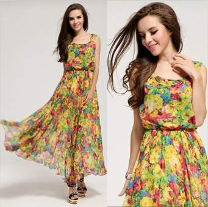
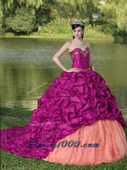

Types of stylish dresses which are available.
  Sitting between a maxi and a mini dress, the midi is what everyone needs for the times when you’re unsure of the formality of an event. This style can have any neckline or sleeve length, so it’s great for any body shape. Pull-on tights and ankle boots for a perfect winter look, or grab a pair of flats and a cute straw hat and have a stylish picnic!
Take the plunge and keep your shoulders exposed in an off-the-shoulder dress. These dresses showcase your shoulders, while maintaining a sleeve or ruffle on the bicep. The off-shoulder style is great for those who want to exhibit their shoulders and arms but don’t want the commitment of a strapless look.